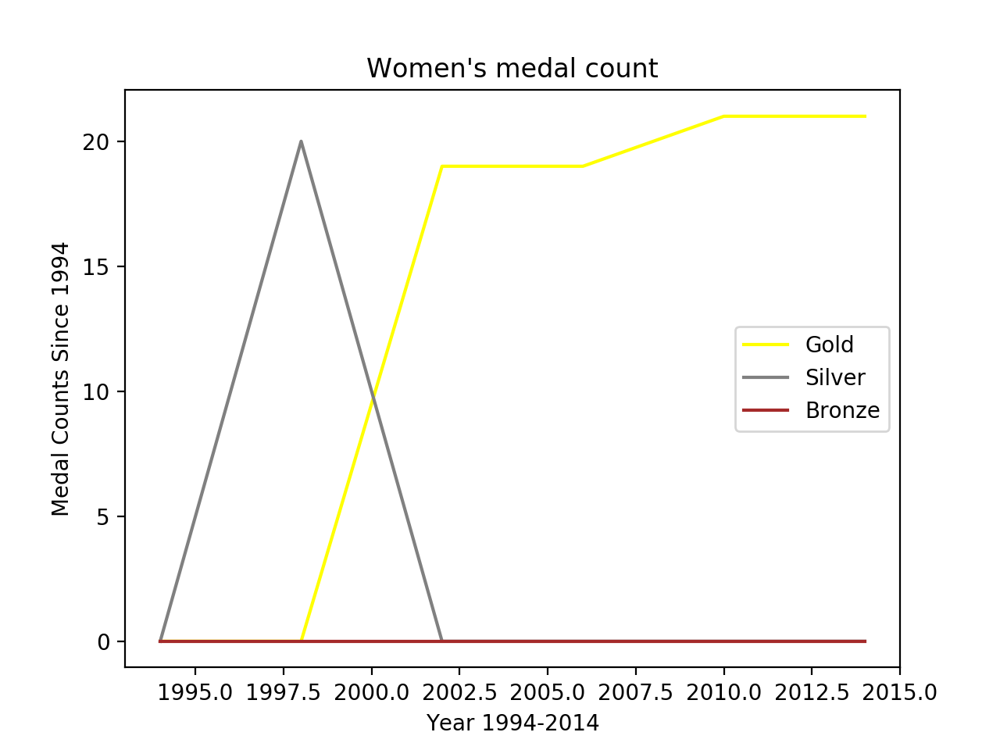

THE DIFFERENCE
BETWEEN THE SUCCESS IN
MEN & WOMENS HOCKEY

 <
<
Women and Men have been playing ice hockey since 1998. The data visualization shown, demonstrates the diffrence between Men and Womens medal count from 1994 to 2014.
Men have a wider range between medals. They have won from gold to silver. They have had various highs and lows.
<Women less of a wide range between medals. They have only won gold sofar. Therefore technically they have done better. Although men have a wider range, the mens sport has been around longer.